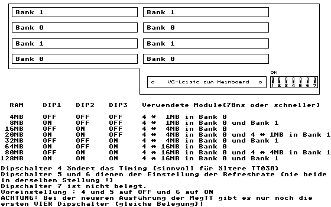

Previous
Next
TOC
Die MegTT RAM Karte

Auf der MegTT sitzt in einer Version zwei Bausteine des Typs 74LS57,
da diese Bausteine mittlerweile nicht mehr hergestellt werden, hier
kurz die Informationen dazu:
QC
QB
CLR
CLKA
8
7
6
5
+-------------------------------+
|
|
|
|
|
|
1:2
|
|
|
|
|
|
|
|
\
o-------+
1:6
|
/
|
|
|
|
1:5
+-------+
|
|
|
|
|
|
|
|
|
+-------------------------------+
1
2
3
4
CLK B
Vcc
QA
GND
PIN
FUNKTION
1 - Clock1
5 - Clock2
2 - VCC
6 - Clear
3 - 6:1
7 - 5:1
4 - GND
8 - 10:1
Da dieser Baustein drei verschiedene Teiler enthält, lassen sich
fünf mögliche Teilerverhältnisse erzielen, und zwar 5:1, 6:1, 10:1,
30:1 und 60:1. Der Baustein besitzt zwei seperate Takteingänge
Clock1 und Clock2. Die Triggerung erfolgt beim HL-Übergang (negative
Flanke) des Taktes. Die Löschfunktion(Clear) ist aktiv High und un-
abhängig vom Zustand der Takteingänge. Der Baustein ist auch unter
der Typennummer 49711 in Standard-TTL erhältlich.
Kapitel Die MegTT RAM Karte, Seite 1